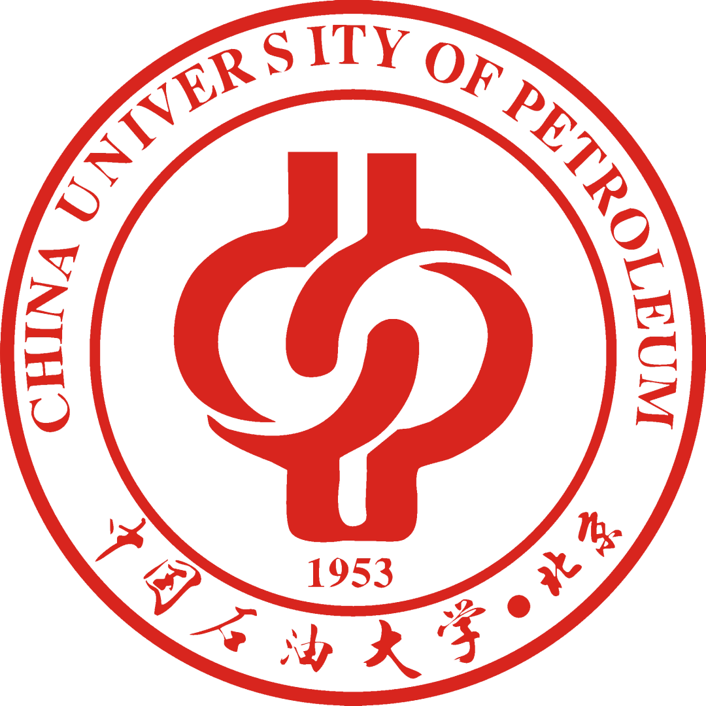

M.Sc. Student, |
Currently I am a seconde-year M.Sc. student in the China University of Petroleum (Beijing).
Before that, I got my B.Sc. degree (ranked top 2 out of 60 students) in the China University of Petroleum (Beijing) in June 2020 from China University of Petroleum (Beijing). In the same year, I was admitted to study for a M.Sc degree in the China University of Petroleum (Beijing) without entrance examination.
Research Interests: Graph neural networks, machine learning, contrast learning, Reinforcement learning.
|  | M. S., China University of Petroleum (Beijing), changping, Beijing [2020.9 ~ 2023.6]
|
B. Sc, China University of Petroleum (Beijing), changping, Beijing [2016.9 ~ 2020.6]
|
An attempt to apply the homotopy method to the domain of machine learning
Yang-yang Liu，Jian-wei Liu
IEEE Transactions on Neural Networks and Learning Systems, Q1(SCI)(manuscripts).
Span-based Boundary-Aware Model for Named Entity Recognition
Zhi-yuan Chang, Yang-yang Liu, Shou-bin Li, Shao-qun Pan
IEEE ACCESS,Q2(SCI)(manuscripts).
A deep learning based detection and identification system and method for polyethylene particle defects
Guo-wen Chen, Yang-yang LIU, Zhen-yu Wang
National invention patent, Patent Number: CN112837311A
Heald filament separation detection system and Method based on self-learning mode
Shou-bin Li, Chong TANG, Yang-yang LIU
National invention patent, Patent Number: CN110865084A
Research on automatic extraction model of key information of petrochemical scientific literature
Algorithm engineer
Horizontal project of Internet Software Technology Laboratory, Institute of Software, Chinese Academy of Sciences
Knowledge extraction model
Member
Horizontal project of Internet Software Technology Laboratory, Institute of Software, Chinese Academy of Sciences
Intelligent electronic access control
Project Leader
University Student Science and Technology Innovation Project of China University of Petroleum (Beijing)
Computer related basic knowledge, proficient in Python language, Linux system operation, etc
Basic knowledge of statistics , studied "random process", "probability theory" and other statistics courses and got good grades